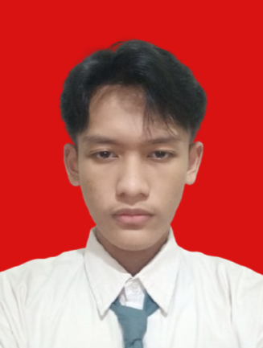

Saya Wildan Kurniawan, mahasiswa jurusan Teknik Informatika di UIN Syarif Hidayatullah Jakarta. Saya memiliki ketertarikan pada dunia teknologi, khususnya pembuatan website, dan terus mengembangkan kemampuan melalui pembelajaran serta proyek.
Portofolio & CV
Halo, saya Wildan Kurniawan.
Mahasiswa Teknik Informatika yang tertarik pada teknologi dan pengembangan web. Saya senang belajar, membangun ide, dan mengubahnya menjadi karya digital.

Teknik Informatika · UIN Jakarta
Perkenalan
Tentang Saya
Ringkasan singkat tentang latar belakang saya.
Latar Belakang
Pendidikan
Pendidikan Tinggi
UIN Syarif Hidayatullah Jakarta
Jurusan Teknik Informatika
Karya Pilihan
Pengalaman & Proyek
Proyek yang pernah saya kerjakan.
Proyek Akademik
Website Portofolio UTS
Website portofolio untuk menampilkan profil, pendidikan, proyek, dan informasi kontak. Proyek ini dibuat sebagai bagian dari UTS dan disimpan di GitHub.
Lihat di GitHub ↗Mari Terhubung
Hubungi Saya
Silakan hubungi saya melalui email atau telepon.